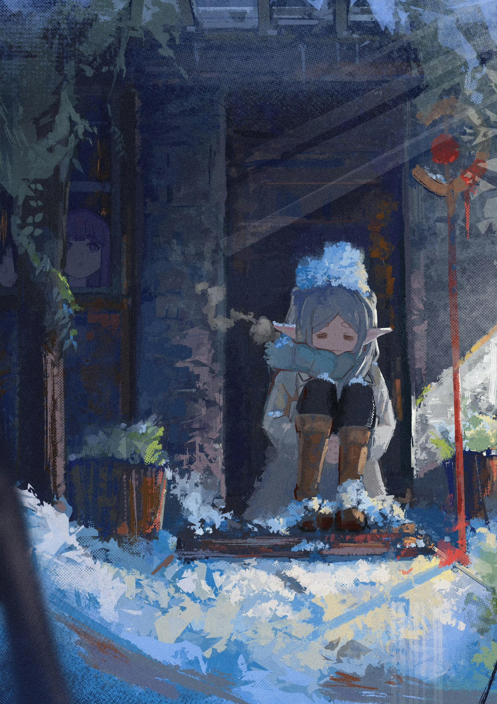

A LITTLE ABOUT ME
About.
关于我
你好，欢迎来到 Flowers for Tuesday。这是我的个人博客，也是安放文字、音乐与思考的一个小小角落。
在这里，我会整理学习中的笔记，分享自己写的歌曲，记录公开发表的学术论文。那些尚未成形的想法，也会在这里慢慢生长。
你可以在 Note 阅读我的笔记，在 Music 听听我的原创音乐，或在 Publication 了解我的学术发表。
在其他地方找到我
BACKGROUND
更多关于我
更详细的个人介绍正在整理中。